产品简介
功能概述
平台基于大数据平台提供的组件进行开发，通过规范数据管理流程，完成数据处理和分析等功能。平台主要负责数据管理、用户管理、文件管理和平台管理，并对外提供开放接口，为企业用户提供数据访问、同步等功能。该平台还提供大数据处理和分析功能，例如数据安全、数据存储、任务调度等服务，基于大数据平台和业务需求，用户可以实现自己想要的功能或场景。
应用场景
基本概念
数据开发流程
快速入门
使用说明
- 建表并上传数据
- 创建工作流
- 创建同步任务
- 设置周期和依赖
- 运维及日志排错
用户指南
数据集成
数据源管理
数据源管理概述
- 以开发者身份进入Poseidon平台,单机对应项目操作进入工作区
- 单击左边侧边栏中的数据集成，导航至数据源管理页面
- 单击新建,弹出新建数据源窗口
- 在新建数据源弹出框中，你可以选择mysql、oracle和sql server数据源,例如mysql数据源
- 选择 JDBC 形式配置该 MySQL 数据源。如下图所示：
- 单击 测试连通性。
- 测试连通性通过后，单击 确定。
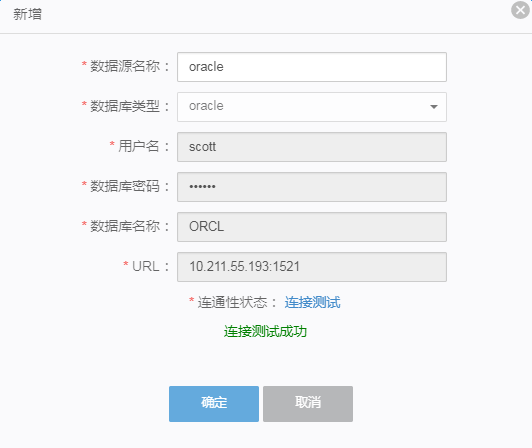
-
数据源名称：由英文字母、数字、下划线组成且需以字符或下划线开头，长度不超过 60 个字符。
-
数据库类型：当前选择的数据源类型 MySQL。
- 用户名：数据库对应的用户名。
-
数据库密码：数据库对应的密码
-
数据库名称：由英文字母、数字、下划线组成且需以字符或下划线开头。
-
url：由IP地址加端口号组成。
数据同步
包含两种状态的数据:离线(批量)数据和实时数据操作步骤
- 新建任务,如下图所示： 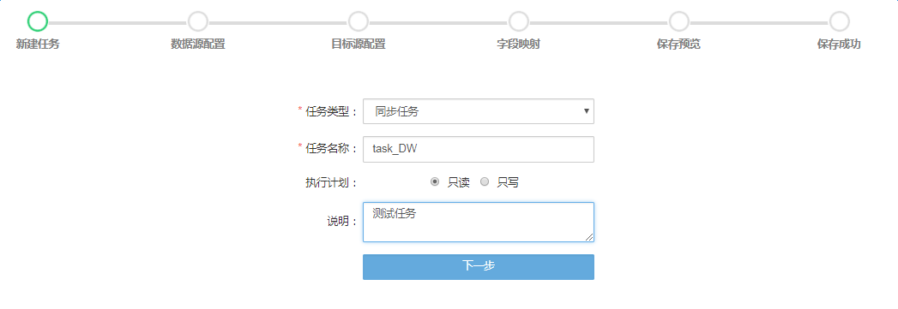
-
任务类型:可以为同步任务、脚本任务和人工智能任务。
-
任务名称:由英文字母、数字、下划线组成且长度不超过 60 个字符。
-
执行计划:可以为你新建的任务赋予权限如可读(不可更改)或可写(可更改)
-
说明: 对你新建的任务进行简单的说明，不得超过 80 个字符
2.数据源配置,如下图所示: 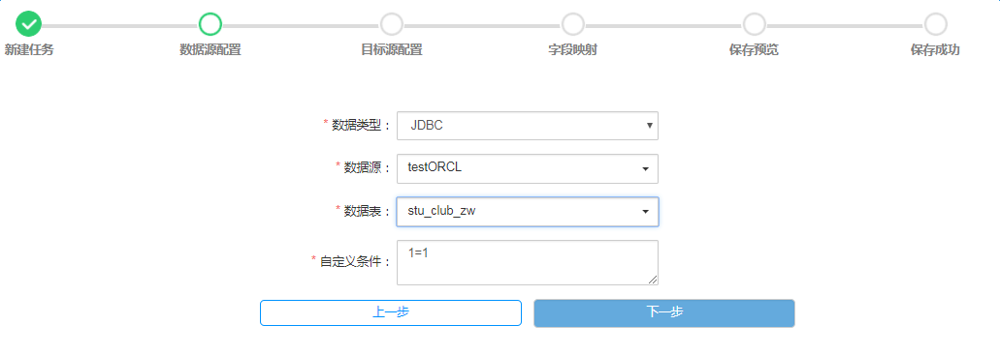
-
数据类型:目前支持FILE和JDBC两种数据格式
-
数据源:包括关系型和非关系型的数据库
-
数据表:对应数据源下的数据表
-
自定义条件:你可以自己写sql语句来选择要同步的字段或者表等等。
3.目标源配置,如下图所示: 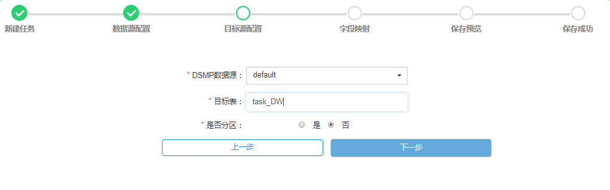
-
DSMP数据源:指的是外部数据的表
-
目标表：指Poseidon大数据平台里内部表
-
是否分区：要同步的表可以设置分区和不分区
-
同步方式:可以全量或部分增量将外部表进行同步
-
分区字段：在已设置分区的情况下,可以设置具体要分区的字段
4.字段映射，如下图所示： 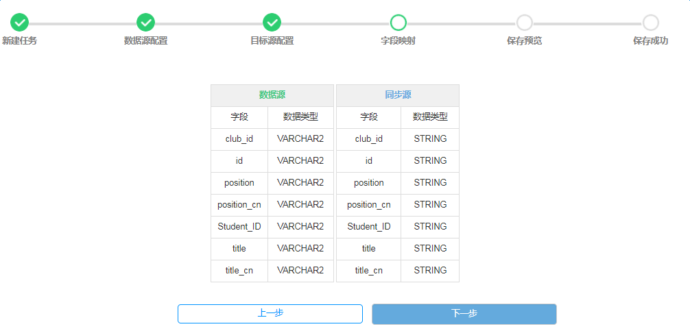
-
数据源：包含外部数据源要同步的字段和数据类型
-
同步源：包含目标源同步的字段和数据类型
5.保存预览, 如下图所示： 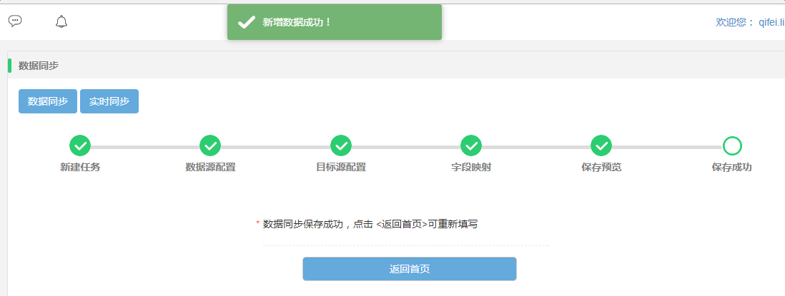
6.你可以清晰的看到之前新建的任务名称和任务内容，当点击保存时就会将该任务显示在新建任务页面。
实时数据同步
主要通过flame的相关参数配置来达到实时数据的目的。
#a1 name
a1.sources=source2
a1.sinks=sink2
a1.channels=channel2
#Spooling Directory
#set source2
a1.sources.source2.type = org.apache.flume.source.kafka.KafkaSource
a1.sources.source2.zookeeperConnect = hdfs02.edcs.org:2181
a1.sources.source2.topic = testTopic
a1.sources.source2.kafka.consumer.timeout.ms = 1000
#set sink2
a1.sinks.sink2.type = file_roll
a1.sinks.sink2.channel = channel2
a1.sinks.sink2.sink.directory = /opt/Repository/del_flume_test
#set channel
a1.channels.channel2.type=memory
a1.channels.channel2.capacity =1000
a1.channels.channel2.transactionCapacity =100
#bind source and channel
a1.sources.source2.channels = channel2
a1.sinks.sink2.channel = channel2
数据管理
数据权限
数据权限:主要针对用户的角色(只读、只写和可读写)和对数据的增删改查功能权限的管理。
操作步骤
- 以开发者身份进入Poseidon平台,单机对应项目操作进入工作区
- 单击左边侧边栏中的数据管理，导航至数据权限页面
- 单击新建,弹出新建数据源窗口
- 在新建窗口,你可以选择账号、数据权限和功能权限分别来创建数据表的权限。

配置项说明

-
账号：分三种类型，例如test_01-->数据管理员,admin*-->系统管理员,K-->一般用户，账号和角色大多遵循这种对应关系。
-
数据访问：当你选择账号后，对应该账号下的所有数据列表都是可以访问的，双击你想要访问的数据列表，就会显示在右边框中。
-
数据权限：针对你访问的数据表中的数据的操作权限,分为只读、只写和可读写的权限。
-
功能权限：是对你选择的访问数据表的操作权限,分为创建和删除。
- 在数据权限主页面,你也可以对你创建的数据列表进行相应的操作如修改(编辑) 删除(批量删除)以及查询通过搜索框进行模糊匹配实现相应的数据操作。
表管理
数据表管理这一模块是对数据表提供相应的表信息和表操作管理，以便广大开发者管理自己的数据表。在表管理中,可以对表进行一下操作:元数据类型、库名、表名、字段等相关属性的操作。
表管理主界面

- 该模块展示了你近期操作过的表，包含名称、类型、所属用户和创建时间。
- 你也可以通过搜索框模糊查找你之前操作过的数据表。
- 对于有些表由于业务需求的变更可能需要变更，你也可以通过右边蓝色比头的标记进行编辑。
- 对于之前的测试或失效的数据表，你可以通过删除标记或批量删除按钮进行删除。

配置项说明
-
元数据类型：目前之前两种元数据类型，分别为结构化数据的Hive和半结构化数据的HBase。
-
库名：针对元数据类型创建的数据库
-
表名：由英文字母、数字、下划线组成且需以字符或下划线开头。
-
字段：由相应的字段名、数据类型、分区字段(是否分区)和描述组成
-
描述信息：对你创作的表做一个简单的描述，来起标识作用。
平台管理
平台管理概述
该管理模块主要用于管理员权限用户，监督系统日志情况，用户管理等。
系统日志
系统日志简介
系统日志实现用户登录日志监控
系统日志效果图
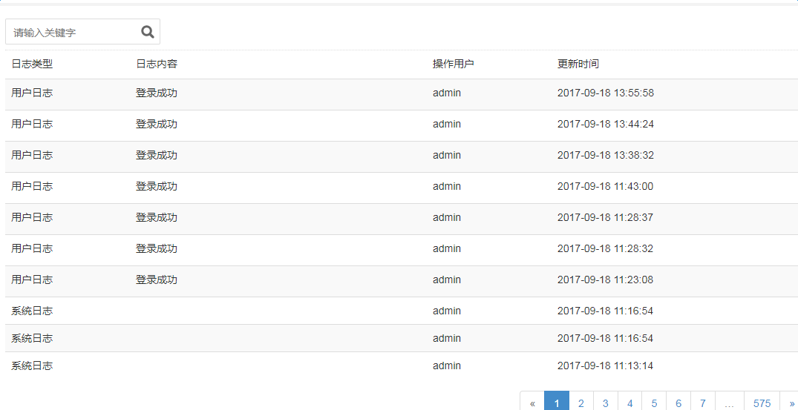系统设置
系统设置简介
系统设置实现了HDP系统UI界面方式的修改，可以更有效管理集群配置信息
系统设置
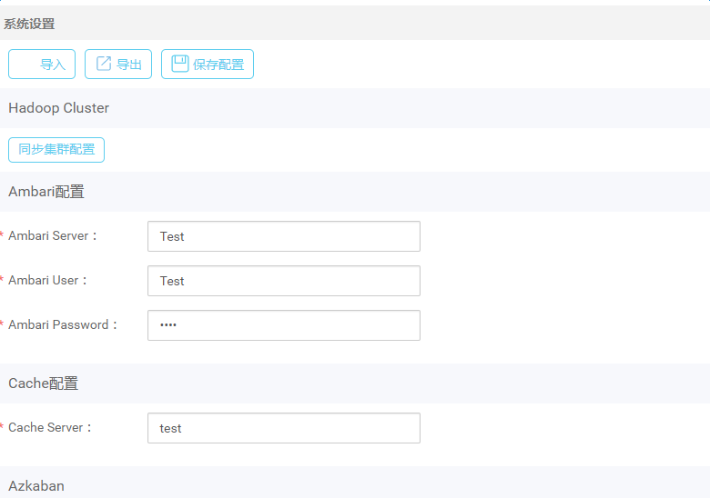系统设置可以导入，导出HDP配置信息，并通过界面修改配置信息
用户管理
用户管理简介
用户管理界面后台实现了用户curl操作
- 用户进入用户管理界面 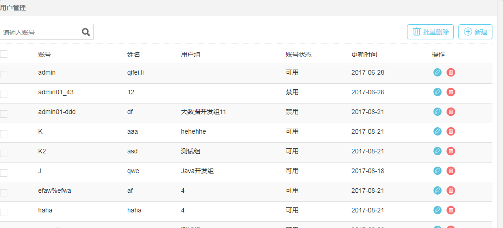
- 单击右边新建按钮，跳转至用户新增页面。可根据不通用户角色，实现用户角色权限管理 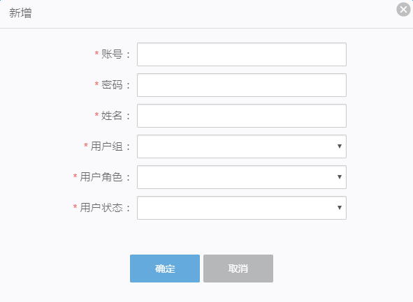
- 单击操作下面修改按钮,弹出更新用户窗口，可以实现用户密码、用户组、角色修改 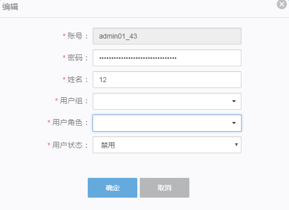
- 单击操作下面删除按钮，可以实现单个用户删除操作 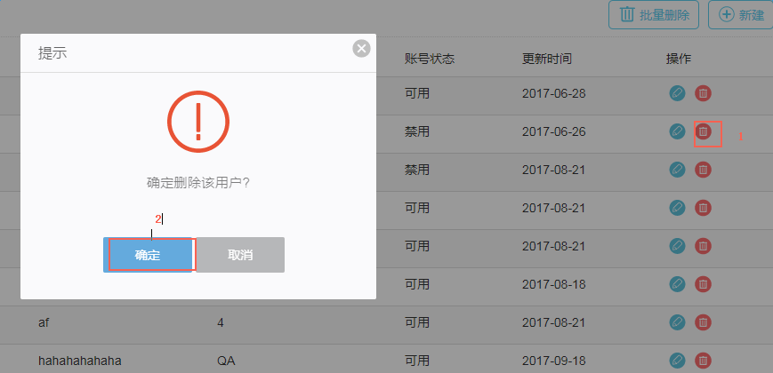
- 单击批量删除按钮，实现批量用户删除操作 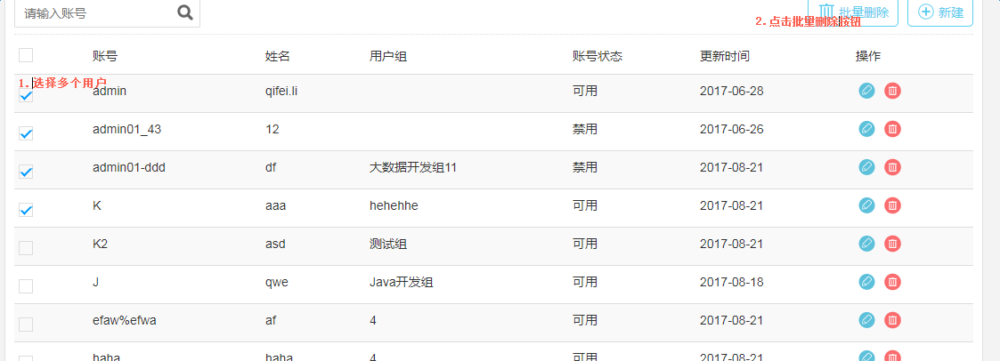
用户组管理
用户组管理简介
用户组管理界面后台实现了用户组的curl操作
- 用户进入用户组管理界面 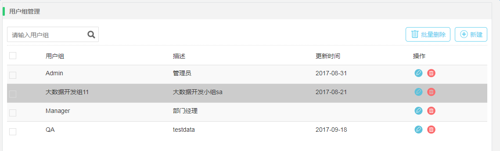
- 单击右边新建按钮，跳转至用户组新增页面。 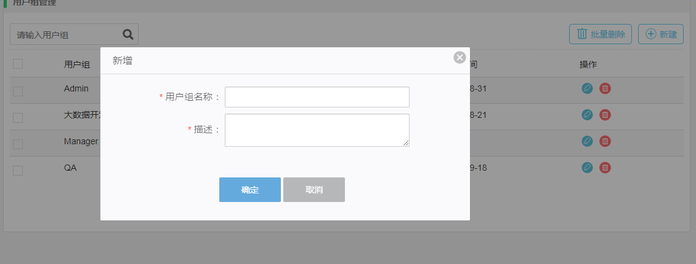
- 单击操作下面修改按钮,弹出用户组窗口。 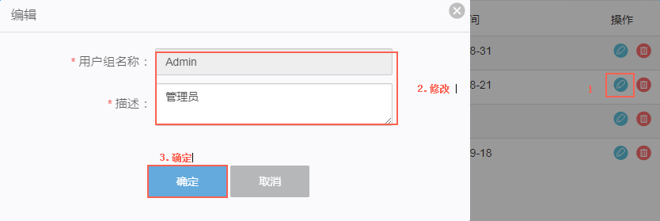
- 单击操作下面删除按钮，可以实现用户组删除操作 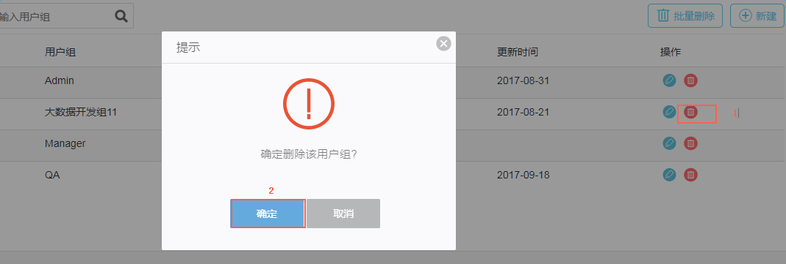
- 单击批量删除按钮，实现批量删除用户组操作 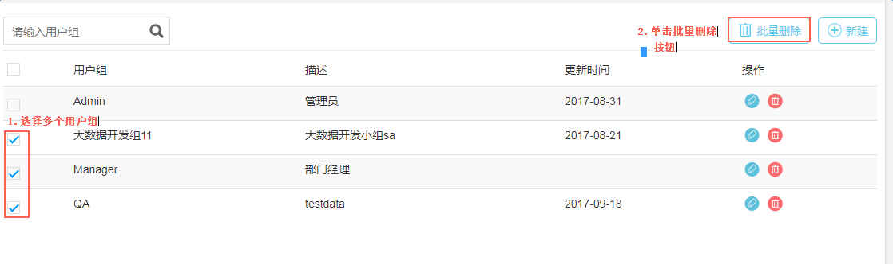
运维中心
运维中心概述
该管理模块主要用于管理员权限用户，监督系统日志情况，用户管理等。
通知渠道
通知渠道功能，主要是当运行的任务报错时，通过给用户发送邮件进行通知提示的功能。如下图所示：

渠道功能简介
-
通过搜索框来查找那些任务失败，只需输入渠道名称即可。
-
新建渠道来通知用户具体的失败任务
-
通过删除来摒弃那些已经解决或者已经过期的渠道名称
-
通过编辑来修改渠道的相关配置
渠道配置说明

- 渠道名称：运行任务失败的名称
- 渠道类型：目前支持的是通过发送EMAIL的形式
- 收信账号：接收人的邮箱地址以@.com结尾的形式
- 端口：根据邮箱服务器的类别区分如QQ邮箱端口号为25，163邮箱端口号为457等等。
- 账号：一般为管理员的邮箱账号
- 密码：一般为管理员的邮箱密码
自定义通知
自定义通知功能，主要是当运行的任务报错时，通过给用户制定一些规则进行通知提示。如下图所示：

-
通过搜索框来查找需要通知的规则名称，只需输入通知规则名称即可。
-
新建通知规则来通知用户具体的规则
-
通过删除来摒弃那些已经解决或者已经过期的规则名称
-
通过编辑来修改通知规则的相关配置
渠道配置项说明

- 规则名称：可以由汉字加数字、字符等组成。
- 触发规则：有三种可供选择的规则，依次为数据使用率、集群状态、和任务(同步、脚本和人工智能)，当选择数据使用率时，又分条件(大于等于， 小于等于)和规则值(百分比形式)。
- 通知渠道：发送邮件的形式与通知渠道一样。
- 通知内容：简单的描述你的通知规则所包含的具体内容。
任务管理
任务管理功能，主要显示近期的任务状态包括同步任务、脚本任务和机器学习任务等等。如下图所示：

功能介绍
-
通过搜索框查找具体同步任务的各种属性包括任务名、任务类型、脚本类型、创建时间、数据源、目标源和定时器。
-
通过定时器和邮件通知来对同步任务进行编辑。(定时器的填写符合* * * * * command
- 分 时 日 月 周 命令
- 第1列表示分钟1～59 每分钟用*或者 */1表示
- 第2列表示小时1～23（0表示0点）
- 第3列表示日期1～31
- 第4列表示月份1～12
- 第5列标识号星期0～6（0表示星期天）
- 第6列要运行的命令 )
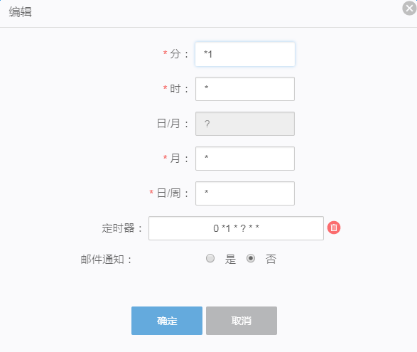
- 通过删除来摒弃那些已经解决或者已经过期的同步任务名称
开发任务

- 通过搜索框查找具体同步任务的各种属性包括任务名、任务类型、脚本类型、创建时间、查询的sql语句和定时器。
任务运维
任务运维功能主要显示当前正在运行的任务状态和已经完成的任务。如下图所示：

- 通过搜索框输入相应的任务名称来查找正在运行的任务包括任务类型、脚本类型、开始时间和结束时间。
- 通过通过查看日志信息来查看正在运行任务的状态。

任务状态
- 主要查看已经完成的任务的状态是失败还是成功，以及任务类型和脚本类型等等。
- 查看相关完成任务状态的日志信息。

数据开发
数据加工
在数据查询页面，表查询模块下，默认会展示所有项目的表，可以根据项目选择需要查询的表。
首先，选择需要查询的数据库，然后在选择该数据库下的需要查询的数据表。 在右边栏有两种数据源spark和hive供你通过sql语句或一定条件来实现查询目的。

操作步骤
-
首先单击左边数据源，选择需要查询的数据库。
-
在相应的数据源下，选择需要查询的具体的某张表。
-
在右边栏，选择相应的数据源类型。

-
然后在下面栏位，编写你需要查询的表的sql语句当然也可以多表关联查询，通过sql条件。

-
也可以点击保存，生成一个任务，然后执行该任务也能得到相应的结果。保存界面如图所示：

配置项说明
- 任务名称：由英文字母、数字、下划线组成且长度不超过 60 个字符。
- 任务依赖：多个人物之间的相互依赖关系，必须按照先后顺序一次完成，才能得到最终结果。
- 数据源：左边栏列出的数据库(可能是hive或者spark中的表)
- 目标表：对应数据源下的数据表
- 是否分区：可以对选择的数据表设置是否分区可以以时间（时、天或月）也可以就某个字段进行分区
- 描述：具体的查询条件(sql语句)，可以根据业务需求，填写具体的查询条件达到相应的目的